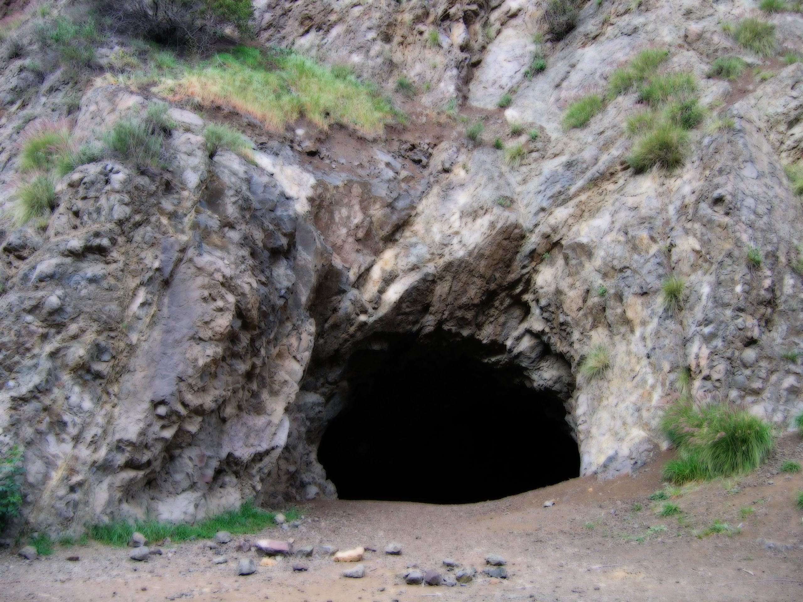
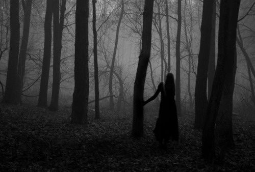

It was a bright night. Even if her campfire only illuminated the cliff face she sat
besides, the moon was full and the fireflies were out in force. They gave a dim light to the deer
path she'd taken to reach this small clearing. In truth, she'd rather have stuck to the main roads
for her trip, but a woman and child traveling alone would draw too much attention. She'd found it
was always safer for her to go unnoticed.

Her child was swaddled tightly in a blanket, and nestled in a small hole in the cliff face to her
back. It wasn't big enough for both of them, but it did at least offered some shelter and safety
to her infant. Safety, it seemed, that she'd be needing more of. In the darkened brush around her
she could see three large figures moving toward her, silent in their approach. If they were just
brigands she was confident she could handle them. Without moving her eyes or head she took stock
of her surroundings.
The clearing was small, too small to fight off three assailants at once. She'd have to keep them
off-balance and prevent them from getting solid footing in the clearing if she wanted to avoid a
drawn out fight. She'd charge the nearest first, hoping to stab him in the heart or neck before
the others could react. Two would still be difficult to fight off in the clearing, but she could
use the fire to keep them from flanking her. She wouldn't die here tonight, and her child
wouldn't be harmed. She was determined to make that thought a reality.

The nearest one had just reached the outside of the clearing now. Without any wasted movement she
picked up her sword, and with three large steps she closed the distance and trust for the figure's
neck. CLANG! The sound of metal against stone rang
out as her sword bounced harmlessly off the figure.
It was now that she was within an arm's-reach of it that she could finally see what it truly was.
The figure, though humanoid, was made of stone and wood. Its "eyes" glowed with a light dimmer than
the fireflies and its limbs had no discernible joints. It's whole body shifted and writhed with a
snake-like quality as it lurched toward her. Without hesitation she grabbed and swung the small
hatchet she'd kept on her belt, it cleaved the creature's face from the chin up, but didn't kill it.
She kicked it back into the brush.
As she rushed toward the small hollow in the cliff she reattached her hatchet to her belt and then
grabbed her child. The two other figures had just entered the clearing, and the one she'd struck had
shambled back to its feet. With her child on her now she took her sword and flung the burning logs of
her camprfire at the two figures and the surrounding brush. She might not be able to kill them, but she
could burn them, and if that didn't work she could burn down the whole forest to slow them.
She fled into the night with the burning forest at her back.